| Order of the Ox
The Hunen black ox— is the traditional maloq symbol of power, fury and uncontrollability. Order of the Ox was established to distinguish the pirates who have earned the respect of the maloqs in the war with the dominators.
Issued
by maloqs to pirates for the system liberation. |
| Calcite Spearhead
This ancient maloq spearhead is awarded to warriors who have liberated the maloq system from the dominators. Considered to be a very honorable award.
Issued
by maloqs for the system liberation |
 | Killing Blow
A medal which is made using the patriotic maloq method— with the supreme commander himself flattening the section of a dominator ship with his fist. Awarded to fighters who have selflessly liberated dominator-captured systems.
Issued
by maloqs to warriors for the system liberation. |
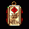 | Warrior Board
An honorary maloq award for warriors of elite detachments. Lists all of the fighter's combat achievements. Carries particular distinction — in the rare event it is not issued posthumously.
Issued
by maloqs to warriors for the system liberation. |
 | Trident Order
Shaped like a war trident — an ancient weapon used by Rakhish warriors in their heyday— this order is issued by the peleng government to those who have distinguished themselves in the fight against the dominators.
Issued
by pelengs for the system liberation |
 | Swamp Spirit
A hermetically sealed metallic microsarcophagus, storing the scent of peleng swamps. Must not be opened, lest the relic will discharge aromatic gases and lose its value. This honorary award is reserved for pirates who have played an active role in liberating a peleng system from the dominator forces.
Issued
by pelengs to pirates for the system liberation. |
 | Congressional Medal
The award of the human Congress of the Confederation— is issued to warriors who strive to rid the Galaxy of dominators.
Issued
by humans for the system liberation. |
 | Nominal Coin
Bearing the engraving of the owner's name, this platinum stamped coinis worth one thousand creditsand serves as a special award from the human government's chamber of commerce. Bestowed to merchant pilots who have achieved success in the war with the dominators.
Issued
by humans to merchants for the system liberation. |
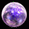 | Ivicus
Essentially a sphere made of holographic phosphorite and encrusted in white energens, this feyan Ivicus is an honorary award for warriors who have found success in the struggle against the dominators.
Issued
by feis for the system liberation. |
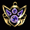 | Mercine Pendant
A pendant made from super-expensive mineral mercine. Founded by the feyan government, this extremely honorary award is bestowed to merchants for their participation in battles against the dominators.
Issued
by feis to merchants for the system liberation. |
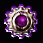 | Crankshaft
A miniature reward from the entire Facet Coalition for the businessmen who contribute to the struggle against the dominators in spite of their busy schedules. It is fashioned in the shape of the greatest feyan invention— a cogwheel, which marked the dawn of their industrial revolution.
Issued
by feis to merchants for the system liberation. |
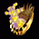 | Small Anglum
An official award from the Gaalian Security Magistrate for warriors who have distinguished themselves liberating planetary systems.
Issued
by gaals for the system liberation. |
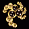 | Kanven-Iviris Medal
Established by the Gaalian Ranger Support Fund, the award is translated from gaalian as «No Peace for Aggressors». It is given to pilots fighting against dominators.
Issued
by gaals for the system liberation. |
 | Order of Dignity
An award instituted by the Galactic Council. It is given to rangers and other pilots actively fighting the dominators.
Issued
by all races for the system liberation. |
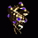 | Guard's Pennant
A token decorating its owner as a top notch fighter. Awarded for heroism comparable to that of the maloq people.
Issued
by maloqs for a successful mission. |
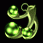 | Dirty Kamikaze Badge
This special token was established to honor the old peleng custom of mud fighting. It is awarded to those who distinguish themselves before the peleng people.
Issued
by pelengs for a successful mission. |
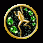 | Frog in a Circle
An award in the shape of a frog in a circle, symbolizing the protection afforded to pelengs by all races. It is given to pirates who don't forget their peleng brothers and associates.
Issued
by pelengs to pirates for a successful mission. |
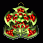 | Red Pantheon
An honorary peleng award for contributing to space entrepreneurship and sabotage. The owner is presumably a pirate who's willing to defend the values of the peleng civilization to the end.
Issued
by pelengs to pirates for a successful mission. |
 | Hero's Gold Star
An honorary human award, signifying one's services before humanity. Awarded to the select few. Shines especially bright in the setting rays of the human Sun.
Issued
by humans for a successful mission. |
 | Triple Oreon
An expanding three-layered disk containing the fingerprints of this century's prominent figures. The outer layer boasts the owner's freshly made fingerprints. A great honor and decoration, this award is given to those humanoids who have distinguished themselves before humanity.
Issued
by humans for a successful mission. |
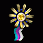 | Ashian Ribbon
A ribbon with the tree colors of Ashian, the «city of progress» at Eipentac— blue, purple and white. Awarded to persons who have assisted the feyan civilization.
Issued
by feis for a successful mission. |
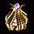 | Big Anglum
The highest official award issued by the gaalian government. Awarded for outstanding services before the gaalian people.
Issued
by gaals for a successful mission. |
 | Uranium Milk
A one-of-a-kind award of gamma radiation. They say if you put it to your head several times a day, you can clear your mind of all impure thoughts.
Issued
by gaals for a successful mission. |
 | Elite Guard Medal
Upon completing an especially dangerous special mission, pilots are raised to the status of elite maloq guards, granted the appropriate honors and awarded the corresponding symbol.
Issued
by maloqs for a successful secret
mission. |
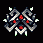 | Secret Force Order
Reward for best performance of special missions. Awarded to pirates, whom always has complete quests, unlike traders and diplomacy characters.
Issued
by maloqs to pirates for a successful secret
mission. |
 | Dancing Pirate Badge
This pirate award was named after the famous peleng clan of Dancing Pirates. Awarded for special achievements in the fight against the enemies of the peleng people.
Issued
by pelengs for a successful secret
mission. |
 | Dried Bubbles
Formerly given to those who have drowned in green swamps, it has been decided to include pirates to this list. Awarded for carrying out special operations for the benefit of the peleng race.
Issued
by pelengs to pirates for a successful secret
mission. |
 | Green Mile
A medal of swamp special services. Made from the highest grade mud, it confers unique antiseptic qualities during absorption. Recommended to wear under clothing.
Issued
by pelengs for a successful secret
mission. |
 | Aaron King's Badge
The exact copy of the aluminum badge worn by the legendary spy Aaron "Rapper" King. The official award of human special services.
Issued
humans for a successful secret
mission. |
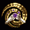 | Galobutton
Awarded to pilots who have distinguished themselves while carrying out secret missions for the feyan government; functions both as a souvenir and a pricey optical toy.
Issued
feis for a successful secret
mission. |
 | Aibo-3001
A feyan award for pirates who succeed in completing missions of national importance. Mimics the logo of the world's first robotic company, creators of the Aibo miniature droid model.
Issued
feis to pirates for a successful secret
mission. |
 | Necrylic Pin
A sharp necrylic pin with the owner's name encrusted on it. A proper weapon in its own right, the award is given to pilots who actively collaborate with the gaalian security services.
Issued
by gaals for a successful secret
mission. |
 | World Map
An award shaped like a symbolic map of the Galaxy, marking areas where peace reigns thanks to the efforts of gaalian special services. Awarded by the secret services of the gaalian race.
Issued
by gaals for a successful secret
mission. |
 | Diamond Sleeve
Awarded by the Galactic Council to employees of secret services, both regular and freelance. The award signifies that its owner can be entrusted with virtually any task.
Issued
all races for a successful secret
mission. |
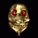 | Sandy Skull
A mark for the most despicable quality a maloq can possess— cowardice. The skull is said to crumble to dust if the cowardly owner finally becomes brave. The theory is yet to be confirmed.
Issued
by maloqs for a failed mission. |
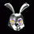 | Rabbit Head
A miniature furry rabbit head with sulfur eyes decorates the collection of a fighter who has disgraced himself with contemptible cowardice before the human civilization.
Issued by humans for a failed mission. |
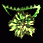 | Mongo Burdock
The feyan government awards pilots not known for their courage a Mongo Burdock— a plant with a peculiar, acrid odor and a symbol of cowardice.
Issued by feis for a failed mission. |
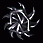 | Black Mark
A sign of tremendous shame. It marks the bearer as a coward who flees the field of battle.
Issued by all races for the elimination of military spaceships. |
 | Rusty Nail
A mark of disgrace, this rusty nail in the third stage of corrosion is reserved for brave pilots turned heinous traitors, having turned their weapons against their former brothers-in-arms. Issued by all races ranger murdering (except pirating rangers)
|
 | Black Heart
Serves as proof that its bearer has lost all sense of morality.
Issued by all races for elimination of transport ships. |
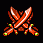 | Order of Saab
A rare award in the form of two crossed red sabers. Bestowed for liberating maloq planets from dominator control. The military high command never forgets its heroes.
Issued
by maloqs to warriors for a planetary battle. |
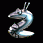 | Otto the Slug
This piece sample of an award souvenir is conferred to pirates who have contributed great efforts to destroy the remains of dominator forces on peleng planets, dear to every pirate.
Issued
by pelengs to pirates for a planetary battle. |
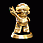 | Mario Brother
A memorable statuette for rangers whose entrepreneurial mindset has helped to sweep dominator forces off human planets. Fashioned in the honor of the great Mario, who, according to legend, rescued not only his beloved but the whole world from a grave threat.
Issued
by humans to merchants for a planetary battle. |
 | Quartz Sting
A medal with an internal driving mechanism, displaying time on all feyan planets simultaneously. Awarded to heroic rangers who have liberated feyan planets from the metallic occupiers.
Issued
by feis for a planetary battle. |
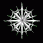 | Crystal Chakra
A special award from the Gaalian Coalition for Freedom And Pure Relations. Bestowed to rangers who have liberated gaalian planets from the dominator troops.
Issued
by gasls for a planetary battle. |
| Order of Dzuhallag
An award issued to members of the Dzuhallag military organization or especially selfless warriors who have displayed extraordinary ability leading combat operations on occupied planets.
Issued
by pelengs for a planetary battle. |
 | Quack Commendation
The maloq government awards this commendation to warriors who have defied the odds and managed to liberate a maloq planet from an overwhelming dominator force.
Issued
by maloqs for a planetary battle. |
| Helping Hand
Awarded by the human government for assisting in the execution of a successful military campaign against the remnants of dominator forces on planets belonging to the human race.
Issued
by humans for a planetary battle. |